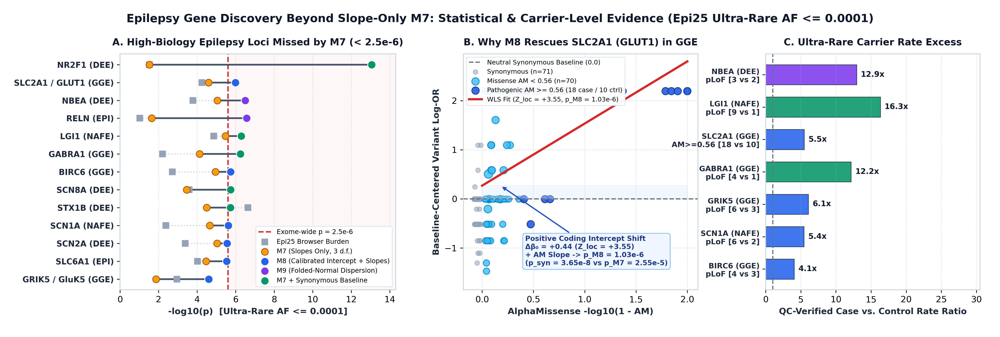
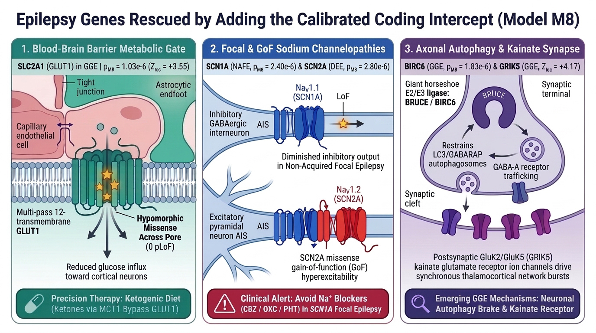
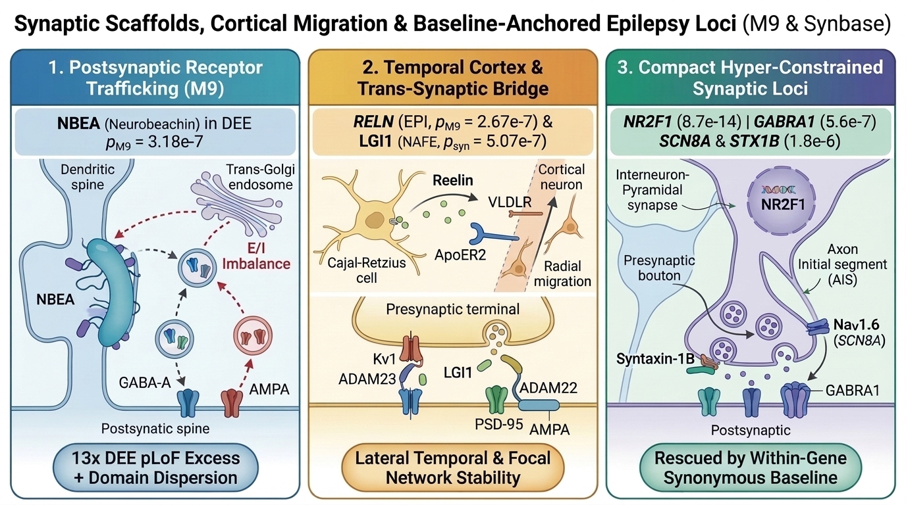

| Gene (Cohort) | Rescuing Model | Epi25 Browser p | M7 (Slopes) p | New Model p | Zloc / QC Carriers | Neurobiological Mechanism & Clinical Take-Home |
|---|---|---|---|---|---|---|
| SLC2A1 (GGE) | M8 + Synbase | 5.64e-05 | 2.55e-05 | 1.03e-06 (3.7e-8) | +3.55 (18/10 AM+) | BBB GLUT1 hypomorphic missense (0 pLoF); ketogenic diet precision therapy |
| BIRC6 (GGE) | M8 (Int+Slopes) | 1.96e-03 | 1.11e-05 | 1.83e-06 | +2.57 (4/3 pLoF) | Axonal BRUCE E2/E3 ligase (pLI=1.0); restrains LC3/GABARAP autophagy (4.7e-10 at AF≤10-3) |
| SCN1A (NAFE) | M8 (Int+Slopes) | 4.17e-03 | 2.17e-05 | 2.40e-06 | +2.80 (6/2 pLoF) | Interneuron NaV1.1 LoF in focal epilepsy; contraindicates CBZ/OXC/PHT |
| SCN2A (DEE) | M8 (cusp) | 4.16e-04 | 9.12e-06 | 2.80e-06 | +2.39 (2/5 pLoF) | Pyramidal AIS NaV1.2 missense GoF encephalopathy (Na+-channel blockers effective) |
| SLC6A1 (EPI) | M8 (cusp) | 9.49e-05 | 3.43e-05 | 2.89e-06 | +3.15 (2/0 pLoF) | GAT-1 synaptic cleft GABA reuptake transporter (12× boost over slope-only M7) |
| GRIK5 (GGE) | M8 (suggestive) | 1.13e-03 | 1.34e-02 | 2.45e-05 | +4.17 (6/3 pLoF) | GluK5 (KA2) high-affinity kainate glutamate receptor subunit (550× gain over M7) |
| NBEA (DEE) | M9 Dispersion | 1.64e-04 | 9.03e-06 | 3.18e-07 | +1.26 (3/2 pLoF) | Neurobeachin PKA scaffold; dendritic GABAA & AMPA trafficking (12.9× pLoF rate) |
| RELN (EPI) | M9 Dispersion | 9.47e-02 | 2.27e-02 | 2.67e-07 | +1.39 (9/7 pLoF) | Secreted Reelin ApoER2/VLDLR ligand; autosomal-dominant lateral temporal epilepsy |
| NR2F1 (DEE) | Synbase M7 | 3.01e-02 | <25 coding | 8.66e-14 | R2 = 64.0% | Nuclear receptor governing cortical MGE interneuron specification |
| LGI1 (NAFE) | Synbase M7 | 1.37e-05 | 3.37e-06 | 5.07e-07 | +1.82 (9/1 pLoF) | Secreted trans-synaptic ADAM22/ADAM23 Kv1/AMPA bridge in focal epilepsy (16.3× pLoF) |
| GABRA1 (GGE) | Synbase / M8 | 6.23e-03 | 7.50e-05 | 5.59e-07 | +3.05 (4/1 pLoF) | Postsynaptic GABAA α1 receptor subunit (12.2× GGE pLoF excess) |
| SCN8A / STX1B (DEE) | Synbase / M8 | 2.6e-4 / 2.3e-7 | 3.4e-4 / 3.2e-5 | 1.81e-06 / 1.89e-06 | +2.10 / +3.50 | AIS NaV1.6 GoF channel & presynaptic SNARE Syntaxin-1B (7/0 case/ctrl pLoFs) |